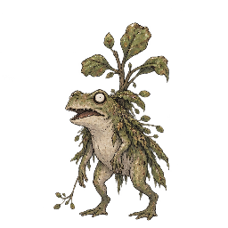
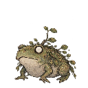
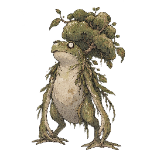
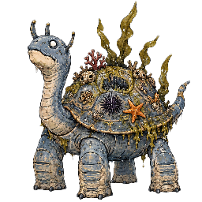
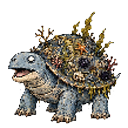
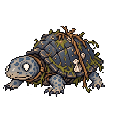
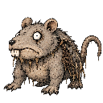

ほのお
- 捕獲率
- 15
- 経験値
- 35
進化
進化元
ごうかトカゲレベル進化覚える技
| 習得 | 技 | タイプ | 威力 | 命中 | PP | 分類 |
|---|---|---|---|---|---|---|
| Lv.1 | ひっかく | ノーマル | 40 | 100 | 35 | 物理 |
| Lv.2 | ほのお | ほのお | 40 | 100 | 25 | 特殊 |
| Lv.3 | しゃくねつのにらみ | ほのお | 0 | 85 | 15 | 変化 |
| Lv.4 | フレイムファング | ほのお | 70 | 80 | 15 | 物理 |
| Lv.5 | もえるこぶし | ほのお | 75 | 100 | 15 | 物理 |
| Lv.7 | まっすぐなほのお | ほのお | 90 | 100 | 15 | 特殊 |
| Lv.9 | おおきなほのお | ほのお | 110 | 85 | 5 | 特殊 |
| Lv.10 | すてみぶつかり | ノーマル | 120 | 100 | 15 | 物理 |
カウンターできる相手

はねるカエルタイプ一致の弱点攻撃おおきなほのお（ほのお）で弱点2倍（ほか4件）

グリーンフロッグタイプ一致の弱点攻撃おおきなほのお（ほのお）で弱点2倍（ほか4件）
 凍り玉タイプ一致の弱点攻撃
凍り玉タイプ一致の弱点攻撃おおきなほのお（ほのお）で弱点2倍（ほか4件）

花咲きカエルタイプ一致の弱点攻撃おおきなほのお（ほのお）で弱点2倍（ほか4件）
カウンターされる相手

げきりゅうガメタイプ一致の弱点攻撃すごいみずポンプ（みず）で弱点2倍（ほか5件）

よろいガメタイプ一致の弱点攻撃すごいみずポンプ（みず）で弱点2倍（ほか5件）

アオガメタイプ一致の弱点攻撃すごいみずポンプ（みず）で弱点2倍（ほか5件）

土くぐりタイプ一致の弱点攻撃じめんをゆらす（じめん）で弱点2倍（ほか2件）

変更履歴
sha256:eedb1d4bb…初回記録
sha256:c0c5741d7…表示中初回記録